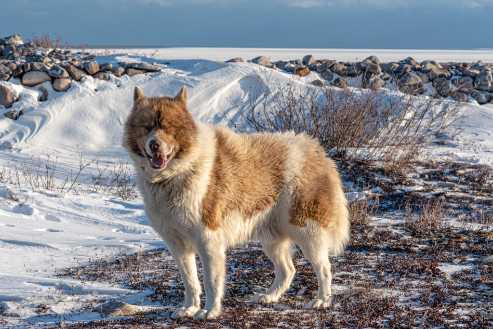

Eszkimókutya
Pontosabban Kanadai Eszkimókutya, de eredeti hazájában az inuitok "qimmiq"-nek hívják. Szánhúzásra, vadászatra is használják, szereti maga leölni prédáját. Nem a kiállítások sztárja, teljes mértékben őrzi ősi tulajdonságait. Az FCI standard nem rég, 2018 június 11-én jegyezte be a fajtát. A kanadaiak nem akarták a fajtát megváltoztatni a kiállításokon elvárt "jólnevelt házikedvenc" szerepre. Ennek megfelelően igen élénk, kifejezetten igényli a munka végzést mind a szánhúzás, mind a vadászat terén, illetve nem az a tipikus egyforma kutyákból álló fajta. Színe és mintázata igen változatos.